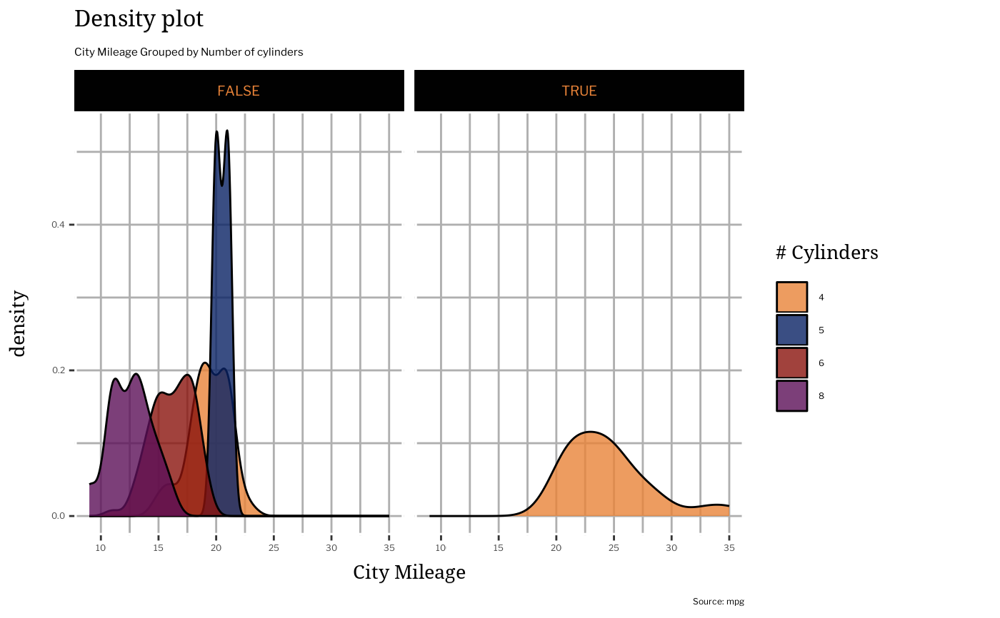

Scales consistent with Princeton Brand Template
scale_princeton.RdScales consistent with Princeton Brand Template
Usage
scale_color_princeton_c(palette = "sequential_orange", ...)
scale_fill_princeton_c(
palette = "sequential_orange",
na.color = "#5b575d",
...
)
scale_color_princeton_b(
palette = "sequential_orange",
na.color = "#5b575d",
...
)
scale_fill_princeton_b(
palette = "sequential_orange",
na.color = "#5b575d",
...
)
scale_color_princeton_d(palette = "core", ...)
scale_fill_princeton_d(palette = "core", ...)
scale_colour_princeton_d(palette = "core", ...)
scale_colour_princeton_c(palette = "sequential_orange", ...)
scale_colour_princeton_b(
palette = "sequential_orange",
na.color = "#5b575d",
...
)Arguments
- palette
Name of the palette to use. See princeton for available palettes.
- ...
Additional arguments to pass to ggplot2::binned_scale for
_b, ggplot2::continuous_scale for_c, or ggplot2::discrete_scale for_d- na.color
Color to use for
NAvalues (only for_bscales)
Examples
library(ggplot2)
ggplot(mpg, aes(cty)) +
geom_density(aes(fill = factor(cyl)), alpha = 0.8) +
labs(
title = 'Density plot',
subtitle = 'City Mileage Grouped by Number of cylinders',
caption = 'Source: mpg',
x = 'City Mileage',
fill = '# Cylinders'
) +
facet_wrap(~ (hwy > 29)) +
scale_fill_princeton_d() +
theme_princeton()
